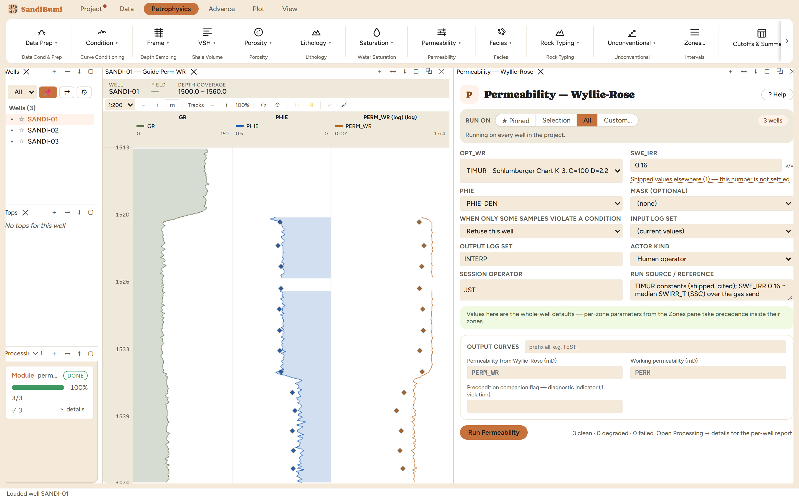

Permeability from porosity and irreducible water saturation, through four named constant sets. This is the estimate you reach for when there is no core: it costs nothing but a porosity curve and one irreducible pick, and it has been quoted on well reports since 1950. Its authors said in the same paper that the result carries order-of-magnitude significance only, and every constant set below inherits that warning.
PERM = (C · PHIE^D / SWE_IRR^E)² [mD] TIMUR C=100 D=2.25 E=1 MORRIS_BIGGS_OIL C=250 D=3 E=1 MORRIS_BIGGS_GAS C=79 D=3 E=1 TIXIER C=250 D=3 E=1
The generalized form is Wyllie and Rose (1950), who replaced the Carman-Kozeny specific-surface term with irreducible water saturation; the shape factor 2.25 is their own suggested value. The pane's documentation carries an attribution record most software never admits to, and it is worth reading once before anything runs: two of the four sets wear a name their author never attached to them. TIMUR here is the Schlumberger Chart K-3 curve, not Timur's 1968 paper, whose published relation works out to C 92.63 and D 2.2 in this squared form: close in good rock, about 14% low in tight rock, which is exactly where a cutoff gets decided. TIXIER is a post-1950 simplification of Wyllie-Rose rather than Tixier's 1949 resistivity-gradient method, which is why TIXIER and MORRIS_BIGGS_OIL are byte-identical here: same lineage, same oil constant, arrived at twice. The 250/79 pair is attributed to Morris and Biggs (1967) by some vendors and to Wyllie and Rose elsewhere; the pane records the attribution as unresolved rather than picking a side.
There is no shipped irreducible saturation, because there is no generic one. With the constants chosen and SWE_IRR left empty, the run refuses:
perm_wyllie_rose did not run: SWE_IRR is not set for this run. It ships ABSENT - the parameter has no defensible generic default, so the app cannot fill it in. Enter a value in the module pane's 'Irreducible effective water saturation' field.
3 clean. Run live: median PERM_WR 910.68 mD in the gas sand and 79.83 mD in the wet sand, 110.47 over the whole section.
SELECT round(median(c.value) FILTER (WHERE sc.gr < 60 AND sc.res_deep >= 10), 2) FROM computed_curves c JOIN standard_curves sc ON c.well_id = sc.well_id AND c.depth = sc.depth WHERE c.curve_name = 'PERM_WR' AND NOT isnan(c.value)
Now the number that makes the chapter: switching the constant set to MORRIS_BIGGS_GAS on the same picks drops the gas-sand median to 75.36 mD, a factor of twelve from TIMUR's 910.68, with nothing else changed. Both are published constants, both compute cleanly, and both plot a plausible curve. Against the 35 core plugs within 8 cm of a sample, the TIMUR run reads a geometric factor of 3.99 high (spread 1.69), and against the core-calibrated transform it is a factor of three high in the same gas sand (910.68 versus 286.25). Switching back to TIMUR reproduces 910.68 exactly, so the demonstration costs nothing.
